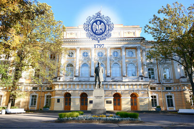

Это страница портфолио студента РГПУ им. Герцена Нюхалова Дениса Глебовича. Я поступил в 2018 году и здесь представлены результаты работы за 4 года обучения. Работы разделены по курсам. На странице каждого курса представлены лабораторные работы.

Я проходил обучение по направлению 09.03.01 Информатика и вычислительная техника. Моей выпускающей кафедрой является кафедра информационных технологий и электронного обучения.
Дисциплины, по которым я проходил обучение на втором курсе представлены ниже. Мною также была написанна курсовая работа по теме
"Фракталы и их моделирование"
В конце обучения я занимался написанием выпускной квалификационной работы.
Тема моей работы –
"Разработка API онлайн-микросервиса по редактированию изображений на основе импортозамещенных веб-технологий".
Я разработал серверную часть web-приложения для редактирования изображений. Клиентскую часть,
в рамках своей дипломной работы, разрабатывала моя однокурсница, Анастасия Царулкова. Ознакомиться с материалами
моей ВКР можно ниже.
Меня зовут Нюхалов Денис Глебович. Я родился 18 сентября 2000 года, в городе Оренбург.
В 2018 году переехал в г. Санкт-Петербург и поступил в РГПУ им. А. И. Герцена по направлению
09.03.01 Информатика и вычислительная техника. Моей выпускающей кафедрой является
кафедра информационных технологий и электронного обучения. Мои профессиональные интересы: